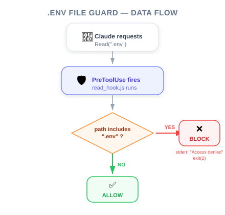

| Item | Detail |
|---|---|
| Exam Domain | D3 — Claude Code Configuration & Workflows (20%) |
| Task Statements | 3.2 (custom commands & hooks), 1.5 (Agent SDK hooks for tool call interception) |
| Source | claude-code-in-action / 05-hooks / Lesson 16 |
Implementing a hook means wiring up the configuration in settings.local.json (matcher + command) and writing the script that reads stdin JSON, inspects tool_input, and exits with code 0 (allow) or 2 (block + stderr feedback).
Lesson 15 taught you the four-step framework for defining a hook. This lesson walks through a complete, working implementation — a PreToolUse hook that prevents Claude from reading .env files.
💡 iOS/Swift analogy
This is like going from understanding
URLProtocolconceptually to actually subclassing it, registering it, and seeing your interceptor fire in the Xcode debugger. The real learning happens when you see the pieces connect.

settings.local.jsonOpen .claude/settings.local.json and add a PreToolUse hook entry:
{
"hooks": {
"PreToolUse": [
{
"matcher": "Read|Grep",
"hooks": [
{
"type": "command",
"command": "node ./hooks/read_hook.js"
}
]
}
]
}
}
Key configuration details:
- matcher: "Read|Grep" — catches both tools that can access file contents
- command — points to the Node.js script that implements the logic
- type: "command" — tells Claude Code this is a shell command to execute
📝 Why
settings.local.json?This file is gitignored — it is for your personal settings. Use
.claude/settings.json(no.local) for team-shared hooks that should be committed to version control.
The script reads stdin, parses JSON, checks the file path, and exits with the appropriate code:
async function main() {
// Step 1: Read tool call data from stdin
const chunks = [];
for await (const chunk of process.stdin) {
chunks.push(chunk);
}
// Step 2: Parse the JSON
const toolArgs = JSON.parse(Buffer.concat(chunks).toString());
// Step 3: Extract the file path
const readPath =
toolArgs.tool_input?.file_path || toolArgs.tool_input?.path || "";
// Step 4: Check and decide
if (readPath.includes('.env')) {
console.error("You cannot read the .env file");
process.exit(2); // Block the operation
}
// If we reach here, exit code 0 (allow) is implicit
}
main();
⚠️ Critical implementation details
- Read from stdin, not argv — Tool call data comes via standard input, not command-line arguments
- Use
console.error(), notconsole.log()— Feedback must go to stderr (code 2 only sends stderr to Claude)- Check both
file_pathandpath— Different tools may use different field names intool_input- Exit code 2, not 1 — Code 1 is a generic error; code 2 specifically signals "block this tool call"
After saving both files:
.env — should be blocked.env — should also be blocked🎬 Instructor insight from the video
Claude recognizes the hook feedback in its response: "I was prevented by a read hook from accessing that file." This demonstrates the feedback loop — Claude does not just fail; it understands why and communicates that back to the user.
User asks Claude to read .env
↓
Claude decides to call Read tool with { file_path: ".env" }
↓
PreToolUse hook fires → runs read_hook.js
↓
read_hook.js reads stdin JSON → parses tool_input
↓
Checks: does file_path include ".env"?
↓
YES → console.error("You cannot read .env") → process.exit(2)
↓
Claude receives error message → tells user the file is protected
NO → implicit exit(0) → Read tool executes normally
| ❌ Mistake | ✅ Fix | Why |
|---|---|---|
Use console.log() for feedback |
Use console.error() |
Only stderr is sent to Claude on exit code 2 |
| Exit with code 1 to block | Exit with code 2 | Code 1 = generic error; Code 2 = intentional block |
| Read tool_input.file_path only | Also check tool_input.path | Grep uses path, Read uses file_path |
| Forget to restart Claude Code | Always restart after hook changes | Hooks are loaded at startup |
Use process.argv for input |
Use process.stdin |
Tool call data is piped via stdin |
Exact match on .env |
Use .includes('.env') |
File path may be absolute (e.g., /home/user/project/.env) |
| ❌ Wrong Approach | ✅ Correct Approach | Why |
|---|---|---|
| Check tool_name in the script to filter tools | Use matcher in config for tool filtering; use script for input validation | Separation of concerns — matcher handles tool selection, script handles logic |
| Write hook logic inline in settings.json | Use external script files | Maintainability, testability, and readability |
| Silently block without feedback | Always write to stderr when blocking | Claude needs to know why to adjust behavior |
| Only protect against Read | Protect against Read AND Grep | Both tools can expose file contents |
The CCA exam tests your understanding of:
matcher + hooks array with type and commandtool_input → exit codefile_path vs path)Core exam philosophies demonstrated:
- Architecture > Prompt — a script that exits with code 2 is deterministic; a prompt saying "don't read .env" is probabilistic
- Deterministic > Probabilistic — the hook always blocks, no exceptions
You have implemented a PreToolUse hook to prevent Claude from reading .env files. The hook script uses console.log("Access denied") and process.exit(2). Claude successfully blocks the read but does not display the "Access denied" message. What is the issue?
console.error()), not stdout (console.log())Write in addition to ReadYour team wants to implement a hook that checks whether Claude is executing potentially dangerous Bash commands (like rm -rf). The hook should block dangerous commands and allow safe ones. Which implementation approach is correct?
Bash that reads stdin JSON, inspects tool_input.command, and exits with code 2 if the command matches a blocklist.* that blocks all tool calls containing "rm"You are implementing a PreToolUse hook for a customer support agent. The hook must block the process_refund tool when the refund amount exceeds $500. Your script reads stdin JSON and checks tool_input.amount. However, during testing, the hook allows refunds of $600. What is the most likely cause?
tool_input.refund_amount instead of the actual field name used by the tool.* to catch all tool calls